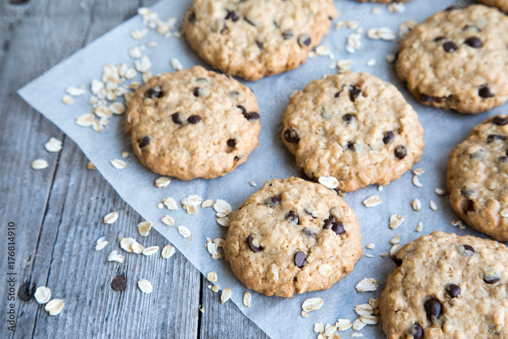

Home
Oatmeal Chocolate Chip Cookies

Description
These filling and flavorful cookies were a staple in my house growing up. Nothing satisfies a sweet tooth quite like them. You can even convince yourself they're a breakfast food if you're imaginitive enough!
Ingredients
- All-purpose flour: 1 cup
- Baking soda: 1/2 teaspoon
- Salt: 1/2 teaspoon
- Unsalted softened butter: 1/2 cup
- Granulated sugar: 1/3 cup
- Light brown sugar: 2/3 cup
- Pure vanilla extract: 2 teaspoons
- Large egg: 1
- Rolled oats: 1 1/2 cup
- Semisweet chocolate chips: 1 cup
Steps
- In a medium bowl, whisk together the flour and baking soda then set aside.
- Combine the butter with both sugars in a large bowl. Beat until light and fluffy.
- Add the salt, vanilla, and eggs to the sugar mixture. Beat until well mixed.
- Add flour mixture. Mix until almost combined.
- Stir in the oats and chocolate chips.
- If you have the time and patience, store and chill dough in the fridge for one hour to overnight.
- Preheat oven to 375 degrees F (190 C).
- Line 2 baking sheets or pans with parchment paper.
- Use a small ice cream scooper or large spoon to drop heaping tablespoon-sized balls of dough onto the parchment-lined pans.
- Bake about 8 to 10 minutes, or until cookies are golden aroung the edges but still soft in the center.
- Remove from oven and let cool on baking sheets for 1-2 minutes. Transfer to a wire rack and let cool completely.
- Enjoy alone or with milk or cold drink of choice!